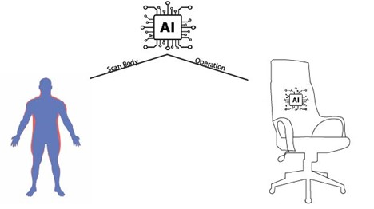

AI Ergonomic chair
About the project
This project will develop a novel ergonomic chair that combines artificial intelligence to solve a variety of bone issues. It is not only for adults who have always sat for long periods of time, but it is also for children to reduce the danger of scoliosis.
During the Covid-19 period, people are required to work from home. Some companies are transitioning from traditional office work to online work, and by using seats that look to be trusted coworkers, they are increasing the efficiency of online employees. According to the American Academy of Neurological Surgeons, scoliosis affects approximately six to nine million people in the United States, accounting for about 2-3 percent of the population (AANS). Furthermore, the primary age of onset for scoliosis, according to the same source, is 10-15 years old, and it affects both genders equally. Every day, the number of people with scoliosis increases, while the average age of scoliosis patients decreases. It's a risky figure for people's health, especially for children, who require the most protection for their development and growth. As a result, the AI Ergonomic Chair was created to address this issue and protect people's spines.
Ergonomic chairs are becoming more popular among office workers and those with a home computer setup as a result of its benefits. Because of the unusual architecture, ergonomics are beneficial. The ergonomic chair, first and foremost, provides entire back support, which, owing to the chair's flexible shape, aids in the preservation of your spine. Second, sitting with a strange spine is difficult because gravity causes people to slouch forward when they sit. Finally, the seat cushion may be adjusted to retain a little backward inclination, which helps to keep the spine aligned with the chair's back. Third, clients may add or remove more elements to customize their seats to meet their own personalities and body types. Finally, the fabric of the chair is net, which absorbs perspiration more effectively than standard canvas chair textiles.
Furthermore, the AI will make this chair more comfortable by utilizing the AI's intelligence, which will automatically adjust the chair to the customer's preferences and demands. AI will be employed in two different ways: to scan the body and to execute operations in the chair. First, the AI will use the sensor to assess the user's body type and determine the ideal chair design for each individual. If a person has a long back and a broad waist, artificial intelligence will adjust a chair to have a long back and a huge seat. Furthermore, artificial intelligence will learn the user's sitting form and alter the chair's appearance automatically. Consider a person sits on a seat cushion with their legs crossed; artificial intelligence will expand or develop a little flat in the middle of the leg chair for people to rest their feet on. Because people who work for long periods of time tend to change their physical appearance and seating performance at different times, the chair's AI will adjust to their body shape to ensure that their back is always covered by the chair back. Furthermore, because to the chair's flexible coupling, the chair adapts its shape to the activity being performed, such as typing, which needs a strange chair, reading, which necessitates a soft, couch-like chair, and gaming, among other things. This AI, like Google Assistant, Siri, and Alexa, will provide visual assistance. Individuals may use basic instructions such as moving up and down the seat cushion or playing music to open and command it. For folks who prefer to relax while listening to music, this chair will include tiny speakers on both sides. Users may also enter orders into the chair's software, which they can subsequently access from their phones, allowing them to perform more complex tasks. As a result, when artificial intelligence (AI) is combined with an ergonomic chair, the chair becomes wiser. It's also more suited to respond to each customer's posture, offering superior illness prevention.
Furthermore, the AI will make this chair more comfortable by utilizing the AI's intelligence, which will automatically adjust the chair to the customer's preferences and demands. AI will be employed in two different ways: to scan the body and to execute operations in the chair. First, the AI will use the sensor to assess the user's body type and determine the ideal chair design for each individual. If a person has a long back and a broad waist, artificial intelligence will adjust a chair to have a long back and a huge seat. Furthermore, artificial intelligence will learn the user's sitting form and alter the chair's appearance automatically. Consider a person sits on a seat cushion with their legs crossed; artificial intelligence will expand or develop a little flat in the middle of the leg chair for people to rest their feet on. Because people who work for long periods of time tend to change their physical appearance and seating performance at different times, the chair's AI will adjust to their body shape to ensure that their back is always covered by the chair back. Furthermore, because to the chair's flexible coupling, the chair adapts its shape to the activity being performed, such as typing, which needs a strange chair, reading, which necessitates a soft, couch-like chair, and gaming, among other things. This AI, like Google Assistant, Siri, and Alexa, will provide visual assistance. Individuals may use basic instructions such as moving up and down the seat cushion or playing music to open and command it. For folks who prefer to relax while listening to music, this chair will include tiny speakers on both sides. Users may also enter orders into the chair's software, which they can subsequently access from their phones, allowing them to perform more complex tasks. As a result, when artificial intelligence (AI) is combined with an ergonomic chair, the chair becomes wiser. It's also more suited to respond to each customer's posture, offering superior illness prevention
Tools and Technologies
We will collaborate with D’ERGO company to make a chair and use a 3D scanning machine from Scantech 3D Vietnam named GOM SCAN 1 for identifying the customer’s shape. Moreover, our team will create an AI bot with the Microsoft Azure AI Platform, which uses python language and machine learning.
Reference
American Academy of Neurological Surgeons, Scoliosis - Symptoms, Diagnosis, and Treatment, viewed 10 Dec 2021
https://www.aans.org/en/Patients/Neurosurgical-
Conditions-and-Treatments/Scoliosis#:~:text=Scoliosis%20affects%202%2D3%20percent,occurring
%20equally%20among%20both%20genders.